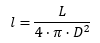
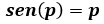
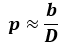
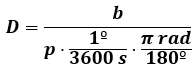
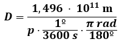
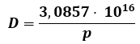
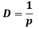

La luminosidad absoluta se puede conocer a partir de la luminosidad aparente.
PROPIEDADES ESTELARES
Luninosidad aparente. Paralaje
LA LUMINOSIDAD APARENTE.
Luminosidad absoluta y luminosidad aparente son dos conceptos separados. Sin embargo están relacionadas. La Luminosidad absoluta viene dada por la ecuación LRT, pero ¿Qué es la luminosidad aparente? Para que puedas distinguir entre una y otra lee con atención lo siguiente:
Estás en un paraje deshabitado, completamente a oscuras, donde no hay ninguna luz cercana (por ejemplo, un desierto). De repente ves un punto luminoso que brilla a lo lejos ¿Sabrías distinguir si es una linterna a 100 m de distancia o un proyector potente situado a 10 kilómetros? Te aseguro que no podrías distinguirlo. Pues lo mismo sucede con las estrellas. Una estrella poco luminosa pero más cercana, puede aparentemente ser más luminosa, vista desde la Tierra, que una más grande pero más lejana. Por tanto, entra ahora en juego un término más: la luminosidad aparente.
Luminosidad absoluta es la luz emitida por la estrella por unidad de tiempo. No depende de lo lejos que esté la estrella, sino solamente de su tamaño y de su temperatura absoluta.
Luminosidad aparente es lo que nos parece la luminosidad de una la estrella cuando la observamos. Depende de su tamaño, de su temperatura, y además de lo lejos que está de nosotros. Representa la luminosidad que recibimos de una estrella por unidad de área, (se mide por tanto en W/m2) luego:

Donde “D” representa la distancia entre la estrella y nosotros.
Por tanto, si conocemos el valor de la luminosidad aparente y la distancia “D“ a la que se encuentra la estrella de nosotros, podremos calcular la luminosidad absoluta de la estrella y usando la ecuación LRT obtener su tamaño.
Entonces, sería importante calcular la distancia a la que se encuentra una estrella. ¿Se puede hacer para estrellas más o menos cercanas? Pues sí, y en el siguiente punto te muestro como.
CÁLCULO DE DISTANCIAS ESTELARES MEDIANTE EL PARALAJE.
Para calcular la distancia de la estrella a nosotros en el caso de que la estrella esté lo suficientemente cerca (relativamente se entiende) es el método del PARALAJE ESTELAR. Solo sirve para estrellas situadas a pocos miles de años luz de la Tierra. En este método se utiliza la trigonometría y se basa en lo siguiente:
Imagina un triángulo isósceles como el de la figura, en el que los observadores están situados en los vértices del triángulo que forman el lado menor. El punto observado está situado en el vértice al que llegan los lados mayores. En este caso, esos tres puntos generan ese triángulo rectángulo, que tendrá un ángulo, que por conveniencia llamaremos 2p (p de paralaje). Es un ángulo medido en grados.

Donde D es la distancia existente entre cualquier observador y el punto observado.
Si se cumple que D (altura) es muchísimo mayor que 2b (cateto menor), lo cual siempre va a suceder cuando observamos una estrella, ya que están situadas a años luz, y entonces, el tríángulo generado tiene una altura enorme, entonces la diferencia entre la altura y el lado mayor de ese triángulo es despreciable y prácticamente la altura del triángulo y los lados mayores tienen el mismo valor “D”.
Por otro lado, fíjate en que un triángulo isósceles se puede dividir en dos triángulos rectángulos como muestro en la siguiente figura:

Y se cumple en este triángulo rectángulo que:

Pero si el ángulo se expresa en radianes, y es un ángulo pequeño (y en estas circunstancias, el ángulo lo es) también se puede hacer la aproximación siguiente:

y no se comete mucho error. Eso es de mucha importancia porque en estas circunstancias, combinando las dos ecuaciones anteriores, obtenemos que:

Al ángulo p se le denomina paralaje y en la fórmula que tienes justo arriba, vendría expresado en radianes. El paralaje tiene un significado físico. Para que lo entiendas quiero que hagas lo siguiente: Extiende tu brazo y tu dedo pulgar e intenta tapar algo lejano con el pulgar extendido. Sin mover la mano, cierra un ojo y mira el pulgar. ¿Cómo se ve el objeto? Seguro que no lo ves en la misma posición con respecto al fondo lejano. Ahora cierra el otro ojo. Verás que el objeto se ve en una posición diferente a la anterior con respecto a ese fondo. En esto se basa el método del paralaje. Consiste en mirar la posición de estrellas relativamente cercanas (como el pulgar), con respecto al fondo de estrellas situado muchísimo más lejos, y que parece fijo precisamente por estar mucho más lejos.

|

|
Pues bien, para utilizar el paralaje estelar. Se miden los ángulos 2p (y luego se divide entre dos para obtener el paralaje “p”) a los que están las estrellas utilizando para ello satélites que observan la estrella con seis meses de diferencia. Ese ángulo se mide comparándolas con las estrellas que están detrás pero mucho más lejos y se supone que en 6 meses no se han movido (o por lo menos no podemos detectarlo). De esta forma, la Tierra está a un lado y a otro del sol (ya que en seis meses recorre media órbita). Como conocemos la distancia Tierra-Sol sabremos el valor de “b” que es la distancia Tierra-Sol. Es fácil despejar de ahí el valor de “D”.
Pero los aparatos que miden el paralaje, no lo hacen en radianes, sino en fracciones de segundo de arco. ¿Cómo cambiar la expresión matemática para que podamos usar directamente las medidas que nos proporcionan los instrumentos utilizados? Tirando de matemáticas. Te lo muestro.
¿Cómo convertir segundos de arco en radianes? Teniendo en cuenta que un grado son 3600 segundos de arco (como la relación entre una hora y los segundos) y 180º equivalen a π radianes. Si el paralaje lo medimos en segundos de arco, para que podamos usar la misma fórmula, debemos sustituir p por:

Pero por otro lado b = distancia tierra-Sol = 1,496 · 1011 m, luego si sustituimos la fórmula anterior queda:

Si hacemos todas las operaciones matemáticas que indica la fórmula, el resultado es:

El valor 3,0857 · 1016 m es precisamente lo que mide un pársec y equivale a 3,2616 años-luz. Así que si la fórmula la dejamos como la hemos obtenido, el resultado de la distancia estelar se mediría en metros, pero si sustituyo el valor 3,0857 · 1016 m por 1 pársec (1 pc), la distancia estelar D vendría expresada en pársec. Es por ello, que la fórmula para la medir la distancia estelar la usaremos así:

El resultado estará expresado en pársec y multiplicando por la equivalencia entre el pársec y el año-luz, obtendremos la distancia en años luz.
Puedes acceder a un vídeo explicativo sobre el paralaje.
Obra publicada con Licencia Creative Commons Reconocimiento Compartir igual 4.0